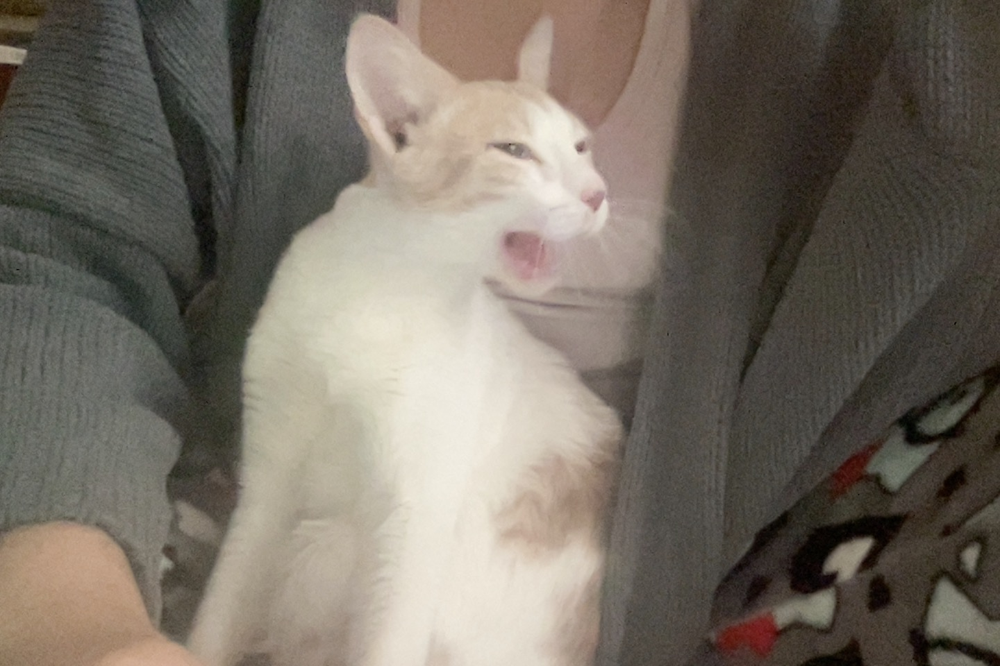

About Me!
Hello! My name is Kailey Arnold and I am currently a senior computer science student at ASU with a minor in Informatics! I am passionate about machine learning, critical thinking to find solutions, and exploring data-driven applications. Most recently I've completed a PostgreSQL music database system which helped me gain a deeper understanding of database management.
Here are some fun facts about me:
- I enjoy reading in my free time.
- I'm a huge cat person.
- Really enjoy informatics- the data side specifically!
- I enjoy organizing my day to balance school, projects, and personal hobbies efficiently.

This is my cat Banjo!